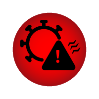
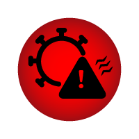

NYC News Service
The Viral Twitter Virus

As the world hunkered down, many took to tweeting. Here is an interactive that explores what was happening on social media, specifically Twitter, throughout that time period.
Social media created a space for people to connect and get their news while in quarantine. It was also a space for folks to express their outrage, in some cases. In other cases, forums like Twitter, TikTok and Instagram
accelerated the spread of misinformation about the coronavirus, including everything from scams to sham cures.
In the United States, many of the political echo chambers the predated COVID remained unaffected, retaining their right-left divide. On Twitter, that was evident. Many pro-Democratic voices criticized President Donald Trump's handling of
COVID. His critics swung daily at the pinata that was his newss briefings, where the President
often espoused unsafe medical treatments for covid and attacked reporters for asking aggressive questions.
Meanwhile, voices from the political right attacked house Democrats. In particular, Nancy Pelosi drew the ire of conservatives for, "playing political games", with stimulus checks.
Using hashtags, have a look at what was being said, and when, as COVID-19 spread across the world.
Choose a hashtag
Choose a date
Hashtag:
Date:
I'm trending baby:
Analysis 2:
Analysis 3:

 
